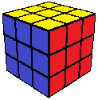

NOTATION
Single face rotations
Capital letters show which side of the cube to turn:
- Front, Back, Right, Left, Up (top), or Down (bottom).
A plain capital letter represents a single (90-degree) turn clockwise.
- A prime mark (e.g. R') makes it counterclockwise.
- A "2" (e.g. R2) makes it a double turn (180 degrees).
Tap/hover over the table cells to see that turn.
| 90 C | 90 CC | 180 | Example |
|---|---|---|---|
| L | L' | L2 |
 |
| R | R' | R2 | |
| F | F' | F2 | |
| B | B' | B2 | |
| U | U' | U2 | |
| D | D' | D2 |
Double face rotations
Lowercase letters indicate that you turn two layers instead of one.
| 90 C | 90 CC | 180 | Example |
|---|---|---|---|
| l | l' | l2 |
|
| r | r' | r2 | |
| f | f' | f2 | |
| b | b' | b2 | |
| u | u' | u2 | |
| d | d' | d2 |
Middle slice rotations
Some algorithms use the inner layers:
- Middle, Equator, and Slice
| Symbol | Equals | Example |
|---|---|---|
| M | r'R |
|
| M' | rR' | |
| E | dD' | |
| E' | d'D | |
| S | fF' | |
| S' | f'F |
Cube rotations
Cube rotations are rare, but y and y' are the most common.
| Symbol | Cube moves like... | Example |
|---|---|---|
| x | R |
Starting Position |
| x' | R' | |
| y | U | |
| y' | U' | |
| z | F | |
| z' | F' |